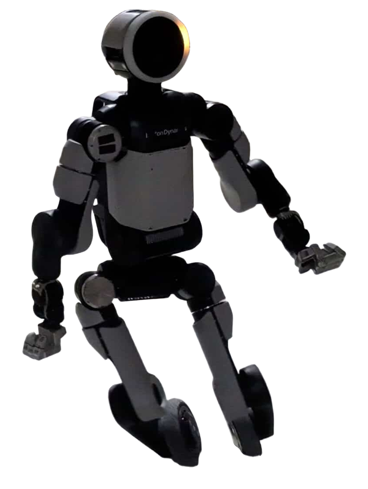

Atlas on Wheels
Boston Dynamics Atlas on Wheels is a humanoid robot from the United States, first released 2026.
Sources retrieved: 16 November 2026 (A)
- Status
- Demonstrator
- Applications
- Intended use, per the manufacturer
- “A wheeled Atlas isn’t a product. It’s a research testbed.”Source and note: Intended use, per the manufacturerA bostondynamics.com/blog/atlas-on-a-roll/ · Retrieved 16 November 2026
- Indicative price
- Not stated

Manufacturer's own photo. Press photo: Boston Dynamics (bostondynamics.com), blog post Atlas on a Roll. Background removed.
Specifications
0 of 33 stated 33 not stated
33 fields hidden
How to read the figuresShow guideClose
- not statedNo source
- noStated by a source
- 0Reported as zero
- ASource
- A*Source with a caveat (select it)
- CERecords only what the manufacturer states regarding CE marking.
Select a source marker for source details and notes.
Physical0/14 disclosed
Power0/5 disclosed
Sensing and autonomy0/6 disclosed
Payload and expansion0/3 disclosed
Commercial0/1 disclosed
Compliance & certifications0/4 disclosed
Notes
Boston Dynamics describes the wheeled Atlas in its blog post of 9 November 2026: “A wheeled Atlas isn’t a product. It’s a research testbed.”
The post asks what happens when you “put wheels on a humanoid and let a learned controller drive it”; Boston Dynamics swapped the feet of Atlas for wheels. On the conversion it says: “A single custom adapter mounts an off-the-shelf scooter rim onto our existing ankle actuator”.
Sources
One line per source, not per figure: a source has one retrieval date.
- Abostondynamics.com/blog/atlas-on-a-roll/Main source. Retrieved 16 November 2026